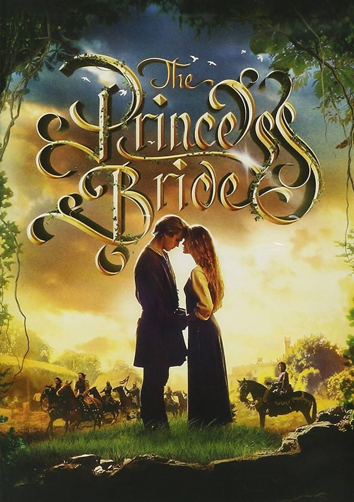
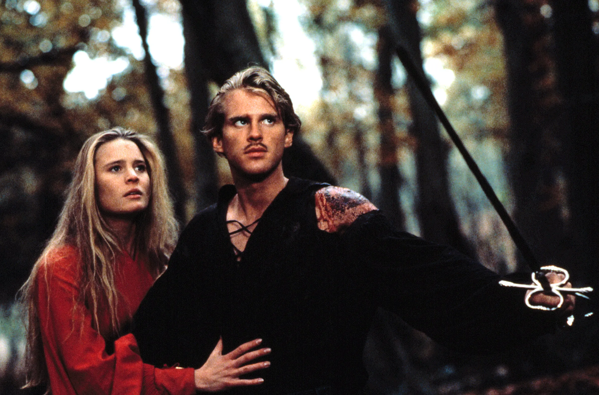

This film has everything that a kid growing up, or even an adult could ever ask for. This movie has elements of overcoming adversity, working together as a team to achieve a task at hand, and even an amazing battle of the wits. The Princess Bride also does a great job at introducing scarier scenes for a younger audience, but making them manageable, as to not scare away its viewers. Last but not least, this movie has amazing camera work. The landscapes that are captured are absolutely stunning, and the classic aesthetic really pulls you in as a consumer.
| Name | Costume | Personal Motivation |
|---|---|---|
| Wesley | All Black & Black Mask | True Love for Princess Buttercup |
| Inigo Montoya | Leather Vest with Pants and Cloth Boots | Revenge Against the 6 Fingered Man |
| Princess Buttercup | A Variety of Outstanding Dresses | True Love for Wesley and Hate of Prince Humperdinck |

The Princess Bride was the staple movie for me growing up. When I was younger, I would watch The Princess Bride with my sister in the back of our suburban during every single road trip. We love the movie so much that we still try to watch it whenever we can, and have also memorized quite a large sum of the movie. I have easily watched it over 100 times. Because of all these reasons, The Princess Bride plays a large part in how I view my life. I feel that I can overcome more challenges due to this movie and I make sure everyone important to me watches it.